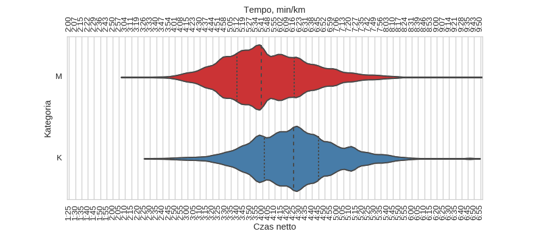
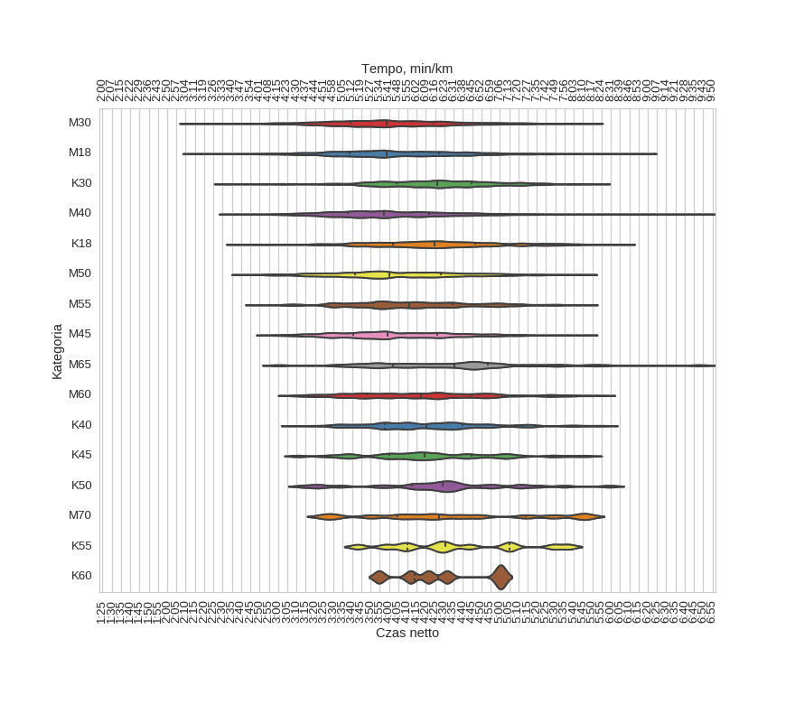
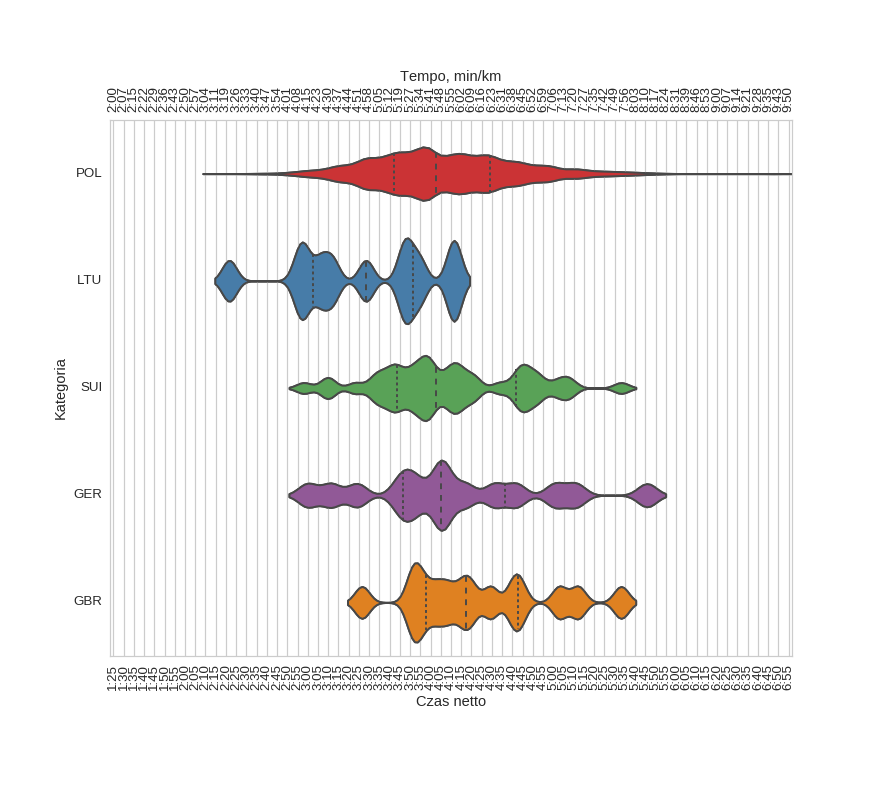

15 Poznan* Maraton (2014)
Histogramy
Klasyfikacja generalna

| mean | std | min | 25% | 50% | 75% | max | |
|---|---|---|---|---|---|---|---|
| czas | 4:06:37 | 0:35:22 | 2:13:28 | 3:42:02 | 4:02:34 | 4:29:11 | 6:49:30 |
kobiety
| mean | std | min | 25% | 50% | 75% | max | |
|---|---|---|---|---|---|---|---|
| czas | 4:25:26 | 0:34:27 | 2:31:55 | 4:01:56 | 4:25:11 | 4:45:04 | 6:47:50 |
mężczyźni
| mean | std | min | 25% | 50% | 75% | max | |
|---|---|---|---|---|---|---|---|
| czas | 4:03:30 | 0:34:32 | 2:13:28 | 3:39:34 | 3:59:13 | 4:25:53 | 6:49:30 |
Wykresy rybkowe
wg płci

| czas | count | |||||||
|---|---|---|---|---|---|---|---|---|
| mean | std | min | 25% | 50% | 75% | max | ||
| plec | ||||||||
| K | 4:25:26 | 0:34:27 | 2:31:55 | 4:01:56 | 4:25:11 | 4:45:04 | 6:47:50 | 901 |
| M | 4:03:30 | 0:34:32 | 2:13:28 | 3:39:34 | 3:59:13 | 4:25:53 | 6:49:30 | 5425 |
wg kategorii

| czas | count | |||||||
|---|---|---|---|---|---|---|---|---|
| mean | std | min | 25% | 50% | 75% | max | ||
| kat | ||||||||
| K18 | 4:25:35 | 0:35:29 | 2:39:06 | 4:02:05 | 4:24:30 | 4:46:33 | 6:05:49 | 238 |
| K30 | 4:25:37 | 0:32:16 | 2:31:55 | 4:04:12 | 4:26:03 | 4:44:55 | 5:52:58 | 413 |
| K40 | 4:22:15 | 0:33:41 | 3:08:28 | 3:57:56 | 4:20:24 | 4:39:59 | 5:56:54 | 130 |
| K45 | 4:23:00 | 0:35:51 | 3:10:42 | 4:00:15 | 4:19:22 | 4:44:45 | 5:47:52 | 70 |
| K50 | 4:29:04 | 0:39:10 | 3:13:28 | 4:12:24 | 4:29:15 | 4:49:41 | 5:59:09 | 28 |
| K55 | 4:37:15 | 0:35:51 | 3:43:06 | 4:10:11 | 4:30:30 | 5:04:59 | 5:37:18 | 12 |
| K60 | 4:30:00 | 0:26:29 | 3:54:40 | 4:14:07 | 4:26:24 | 4:52:38 | 5:01:06 | 6 |
| M18 | 4:02:44 | 0:36:05 | 2:15:40 | 3:38:39 | 3:58:51 | 4:26:52 | 6:17:27 | 1038 |
| M30 | 4:01:54 | 0:33:40 | 2:13:28 | 3:38:59 | 3:58:48 | 4:23:40 | 5:48:47 | 2217 |
| M40 | 4:01:32 | 0:33:27 | 2:34:48 | 3:37:38 | 3:57:29 | 4:21:30 | 6:49:30 | 976 |
| M45 | 4:03:25 | 0:31:49 | 2:54:37 | 3:40:53 | 3:59:14 | 4:25:53 | 5:46:17 | 470 |
| M50 | 4:05:29 | 0:34:55 | 2:41:53 | 3:41:24 | 4:00:24 | 4:28:09 | 5:45:28 | 343 |
| M55 | 4:13:03 | 0:33:16 | 2:49:01 | 3:51:28 | 4:10:52 | 4:34:24 | 5:46:07 | 208 |
| M60 | 4:18:30 | 0:37:23 | 3:07:31 | 3:48:01 | 4:17:05 | 4:44:29 | 5:54:47 | 116 |
| M65 | 4:33:41 | 0:43:40 | 3:00:21 | 4:02:06 | 4:35:25 | 4:53:35 | 6:47:50 | 42 |
| M70 | 4:34:44 | 0:47:44 | 3:25:19 | 4:04:23 | 4:26:53 | 5:14:13 | 5:46:47 | 13 |
wg krajów

| czas | count | |||||||
|---|---|---|---|---|---|---|---|---|
| mean | std | min | 25% | 50% | 75% | max | ||
| kraj | ||||||||
| GBR | 4:23:52 | 0:35:22 | 3:26:30 | 3:57:56 | 4:17:34 | 4:42:54 | 5:33:11 | 14 |
| GER | 4:11:06 | 0:45:23 | 2:59:54 | 3:46:43 | 4:05:00 | 4:36:29 | 5:45:49 | 15 |
| LTU | 3:26:51 | 0:35:04 | 2:21:37 | 3:02:19 | 3:28:28 | 3:51:38 | 4:12:02 | 11 |
| POL | 4:06:51 | 0:35:03 | 2:15:40 | 3:42:21 | 4:02:42 | 4:29:14 | 6:49:30 | 6184 |
| SUI | 4:09:08 | 0:35:29 | 2:58:00 | 3:43:41 | 4:02:52 | 4:41:48 | 5:33:12 | 41 |
Menu
HistogramyWykresy rybkowe
∙ wg płci
∙ wg kategorii
∙ wg krajów
Dystans: 42.195 km
Liczba uczestników: 6326
Wygenerowano: 2016-03-28 21:47:05.547204